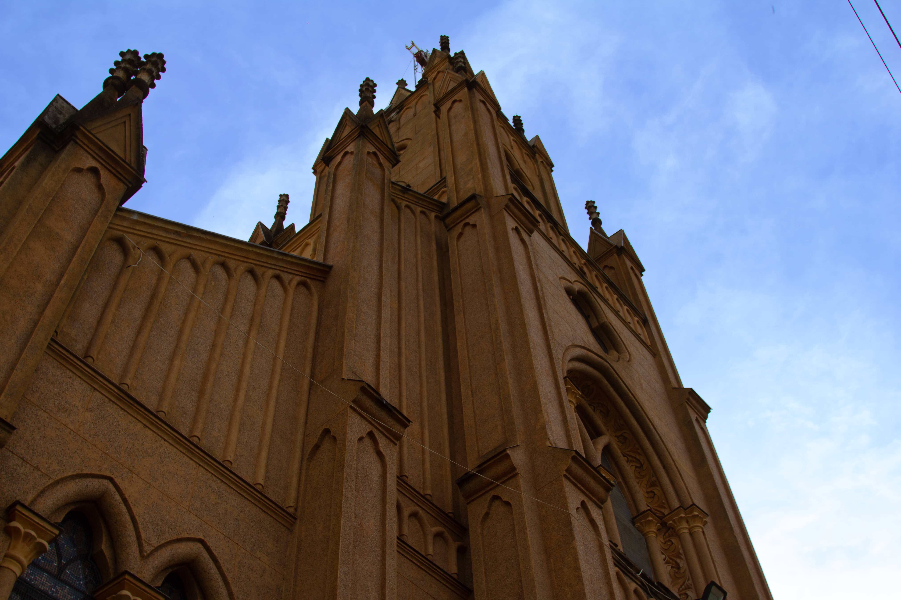

Pastoral
Catequese
Preparação para Primeira Comunhão e Crisma.
A caminhada de fé da Paróquia Nossa Senhora do Carmo
Uma comunidade dedicada à fé, à oração e ao serviço
A Paróquia Nossa Senhora do Carmo, em Campos Gerais, Minas Gerais, é uma comunidade de fé enraizada na devoção à Virgem do Carmo. Pertencente à Diocese de Campanha, tem rica história de evangelização.
Ao longo dos anos, tem sido ponto de encontro para os fiéis, oferecendo sacramentos, acolhimento e solidariedade.

Nossa Senhora do Carmo
Nossa Senhora do Carmo é o título dado à Virgem Maria associado à Ordem do Carmo. A devoção remonta ao Monte Carmelo. O escapulário é símbolo de proteção mariana. Sua festa é celebrada em 16 de julho, nossa principal celebração.
Conheça as atividades pastorais
Preparação para Primeira Comunhão e Crisma.
Animação e organização das celebrações.
Encontros semanais de oração e louvor.
Ação social em favor das famílias necessitadas.